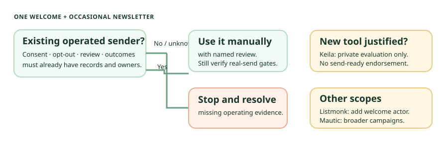

Small-list newsletter audit · 29 Sep 2026
For one welcome email, compare the smaller routes first.
For a sign-up form, one welcome with a download link, and occasional newsletters, first check whether an existing operated sender can do the job. Inference: if a new self-hosted tool is needed, Keila is the closer private-evaluation candidate. Neither Keila nor Listmonk is cleared for the vetted four-layer shortlist or a real send by this document audit.
The decision path

| Route | What is documented | Decision for this job |
|---|---|---|
| Existing sender, used manually | No new app or database if the operated process already records eligibility, opt-outs, content review, and provider outcome. | First conditional option (inference). Stop if any of those records or owners is missing. “Manual” is not an exemption. |
| Keila v0.30.3 release anchor | The project's welcome feature note describes form-configured welcome after submission or double opt-in and an example download link. Campaign docs describe scheduling; sender docs require a configured sender. | Closest private-evaluation candidate (inference), not send-ready. Exact-tag licence scope, tested recovery, security route, and provider-outcome controls remain open. |
| Listmonk v6.2.0 release anchor | Public subscription API, campaigns, and a transactional API are documented. | A built-in post-confirmation welcome trigger was not established. A separate reviewed actor or manual step would have to send the welcome and reconcile suppression and duplicates. |
| Mautic Community 7.2.1 | Campaign logic and operator-added cron support wider lifecycle work. | Keep for broader approved campaign/segmentation needs, not the default for one welcome and occasional mail. See the Mautic audit. |
Where the two smaller tools differ
Keila's documented fit.
The form guide covers hosted or embedded forms; the welcome note says the welcome follows submission without double opt-in, or confirmation with it. The form API says API submissions bypass form captcha. These are documentation claims, not tested timing, lawful consent, abuse resistance, or exactly-once delivery. Link hosting and access remain external.
Listmonk's missing link.
The automatic opt-in email is confirmation, not the requested later welcome. The transactional API can be called by a separate actor, but the checked material did not establish a native form/confirmation-to-welcome trigger. An open project request describes the gap; it is not proof that every version lacks the feature.
Both require an operator-managed application, PostgreSQL, mail credentials, public-form boundary if exposed, backups, and a provider. Listmonk's bounce docs require configured POP3 or provider webhooks. Keila's analytics page distinguishes self-hosted SES with configured webhooks from managed handling. Neither source establishes all-provider suppression, provider reconciliation, or exactly-once sends.
Licence, recovery, and edition gate
- Listmonk: the accessible v6.2.0 tagged licence is AGPLv3 for the checked repository. The release notes multi-user permission fixes; that is not a security guarantee. Its upgrade guide calls for a PostgreSQL backup, but a tested restore/rollback was not established.
- Keila: the v0.30.3 release was accessible, but exact-tag tree, licence, and
extra/reads failed. The accessible current licence, README, extra notice, and older scope notice indicate AGPL core, with logo and cloud-onlyextra/outside that grant. They do not establish path-by-path scope in v0.30.3. Managed “Send with Keila” and cloud support are separate; no self-hosted service-level agreement was established. - Recovery: Keila configuration identifies PostgreSQL, a persistent upload directory, secrets, and system mail settings. A complete tested restore/rollback was not found. Listmonk's security-report route is explicit; a current Keila private disclosure route could not be verified from the cached security page. Do not interpret that as proof no route exists.
Shortlist decision: no addition. Keila's exact-tag scope and recovery/security/outcome gate is unresolved. Listmonk's native welcome trigger was not established. These are scoped comparisons, not a replacement for Mautic's broader campaign role.
Safe next step: private fictional-data review only
- A content/consent reviewer drafts fictional disclosure, opt-in, and welcome copy with a dummy private link. Record what consent provenance a future real process would need.
- A mail operator pins a package in an isolated non-public environment, uses a local mail sink, and maps confirmation, welcome, unsubscribe, failure, and provider-event state. Keep production credentials, real recipients, public forms, outbound sending, and unattended schedules absent.
- A teardown owner inventories and deletes dummy contacts, uploads, database volumes, and secrets; record any remaining backup copies. UI deletion is not provider or backup deletion.
Before a real send, obtain exact package/licence scope, approved sender and DNS/provider policy, recipient provenance and suppression evidence, a tested database-and-upload restore, provider bounce/complaint and duplicate-send reconciliation, a named incident owner, and explicit human content/recipient launch approval. None of those checks was performed here.
Evidence and limits
The Listmonk release is dated 26 June 2026; the Keila release is dated 6 September 2026. Current documentation may not be pinned to either release. This was source reading only, not a legal opinion, security assessment, deliverability test, or production recommendation. Read the research library, Mautic dossier, and safe first test for related boundaries.